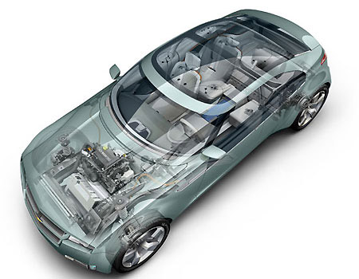
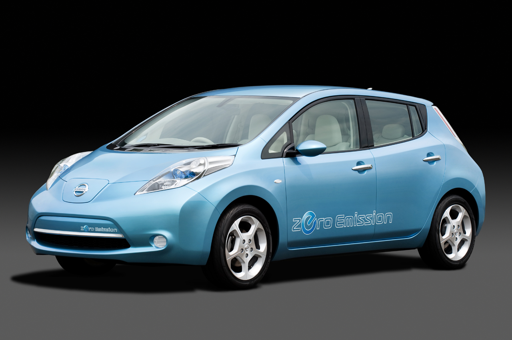
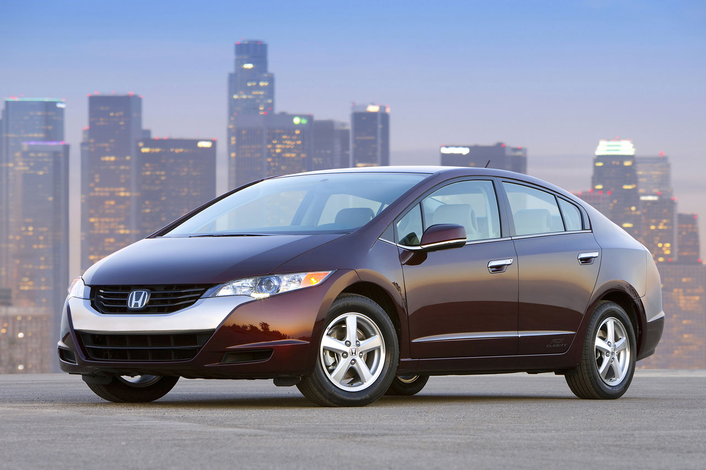

cts | Volt a Day | Cars
These are the possible cars out there, from my (slightly myopic) point of view.

Top of the list is the Chevy Volt, since we already have a pure electric car in the garage (my wife has a Toyota Rav4 Electric). So it would be good to have a car that can go a couple hundred miles if we suddenly had a need to drive to Las Vegas. That's hard to picture, since we have a little four-seater, single-engine airplane for those sort of trips, but maybe we have someone with us that's scared of heights. The Volt fills that need and let's me drive 98% of my days without burning any fossil fuels at all. (It's rare that I drive more than forty miles in a day.)
A close second place is the Nissan Leaf. If there are nearby chargers, our family of four could still use it to get up to Santa Barbara and back (92 miles). Most likely if we had this and the Rav4 Electric we would

occasionally need to rent a car. Maybe three times a year. I haven't gotten a chance to drive one yet, but I've spoken to someone who has. They said it feels like a real car, but more like an econobox car than a solid sedan. That might be fine for the sort of driving I do. I put down a deposit to hold a spot in line.
The Honda Clarity isn't a real car. That is, they are not manufacturing it. They are building them by hand. I think they deliver about three a year. Jamie Lee Curtis

has one and I see one around Santa Monica on occasion. It is a hydrogen fuel cell car, which is such advanced technology that I can't believe they don't fly. I would love to have one. My wife is on a list for one, and they know she's been a purely-electric driver for a decade, and she's in media and entertainment and all of that. I used to call their department of Advanced Vehicles once a month. I so rarely got to talk to anyone that I gave up.
Saab just announced in September 2010 that they were going to make an electric station wagon. That would be a great car for us. We will keep an eye on that.